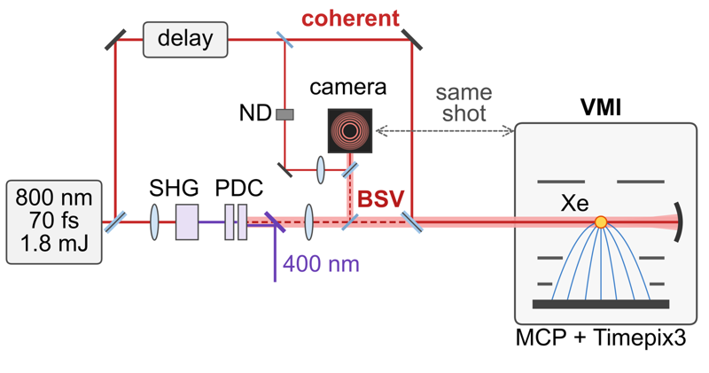

Strong-field ionization with bright squeezed vacuum
With bright squeezed vacuum added to a strong laser of the same color, we found that the photoelectron yield from xenon follows the part of the squeezed light's field that is in phase with the laser, so the relative phase of the two beams sets how much of the light's noise reaches the electrons. Across the photoelectron spectrum the relative variance of this noise differs by more than an order of magnitude between ionization channels, and in each channel it measures how steeply the yield depends on the laser intensity.